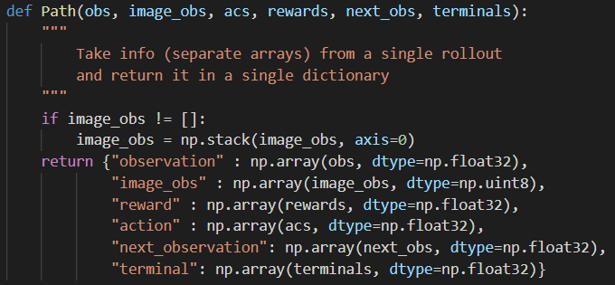

scripts/run_hw1.py
主程序
BC_Trainer()
params['agent_class']=BCAgent
rl_trainer=RL_Trainer()
run_training_loop()
rl_trainer.tun_training_loop()
infrastructure/rl_trainer.py
env=gym.make(self.params['env_name'])
agent=BCAgent(env,params)
----itr----
collect_training_trajectories()
不做DAgger，直接用专家轨迹
if (itr == 0): loaded_paths = pickle.load(open(load_initial_expertdata, "r")) return loaded_paths, 0, None做DAgger，需要重新根据专家policy采数据
xxxxxxxxxx# TODO collect `batch_size` samples to be used for trainingpaths, envsteps_this_batch = utils.sample_trajectories( self.env, collect_policy, batch_size, self.params['ep_len'])do_relabel_with_expert()
xxxxxxxxxx# TODO relabel collected obsevations (from our policy) with labels from an expert policyfor i in paths: i['action']=expert_policy.get_action(i['observation'])agent.add_to_replay_buffer()
train_agent()
xxxxxxxxxx# TODO sample some data from the data bufferob_batch, ac_batch, re_batch, next_ob_batch, \ terminal_batch = self.agent.sample(self.params['train_batch_size'])xxxxxxxxxx# TODO use the sampled data to train an agenttrain_log = self.agent.train(ob_batch, ac_batch, re_batch, next_ob_batch, terminal_batch)agents/bc_agent.py
actor=MLPPolicySL()
replay_buffer=ReplayBuffer()
train()
actor.update(obs,act)
add_to_replay_buffer()
replay_buffer.add_rollouts(paths)
policies/MLP policy.py
logits_na
mean_net、logstd
get_action(obs)
xdef get_action(self, obs: np.ndarray) -> np.ndarray: obs = np.array(obs) if len(obs.shape) > 1: observation = obs else: observation = obs[None] # TODO return the action that the policy prescribes #需要传入tensor actions = self(ptu.from_numpy(observation)) # print("actions:", actions) #从action中采样 if (self.discrete): action = np.argmax(ptu.to_numpy(actions), axis=1) #离散动作取最大概率 else: action = actions+torch.tensor( np.exp(ptu.to_numpy(self.logstd)) * np.random.normal(loc=0, scale=1,size=actions.shape[1])).cuda() action = ptu.to_numpy(action) #连续动作从分布中采样 return actionupdate(obs,act)
xxxxxxxxxxdef update( self, observations, actions, adv_n=None, acs_labels_na=None, qvals=None): # TODO: update the policy and return the loss loss = self.loss(ptu.from_numpy(actions), ptu.from_numpy(self.get_action(observations))) self.optimizer.zero_grad()#loss默认requires_grad是false loss = loss.requires_grad_() loss.backward() self.optimizer.step() return { # You can add extra logging information here, but keep this line 'Training Loss': ptu.to_numpy(loss), }forward(obs)
xxxxxxxxxx# This function defines the forward pass of the network.def forward(self, observation: torch.FloatTensor) -> Any: input = observation if (self.discrete): output = self.logits_na(input) else: output = self.mean_net(input) return output
infrastructure/replay_buffer.py
paths：保存所有轨迹；obs、acs、rews、next_obs、terminals
add_rollouts()
向字段中添加轨迹
sample_random_data()
np.random.permutation：乱序生成x维list，或将list打乱
xxxxxxxxxx## TODO return batch_size number of random entries from each of the 5 component arrays abovebatch = np.random.permutation(self.obs.shape[0])batch = batch[:batch_size]return ([self.obs[batch], self.acs[batch], self.rews[batch], self.next_obs[batch], self.terminals[batch]])sample_recent_data()
infrastructure/utils.py
sample_trajectories()
至少取min_timesteps_per_batch个(s,a)
xxxxxxxxxx#Collect rollouts until we have collected min_timesteps_per_batch steps.imesteps_this_batch = 0paths = []while timesteps_this_batch < min_timesteps_per_batch: p = sample_trajectory(env, policy, max_path_length, render, render_mode) paths.append(p) timesteps_this_batch += get_pathlength(p)return paths, timesteps_this_batchsample_n_trajectories()
xxxxxxxxxx#Collect ntraj rollouts.paths = []for i in range(ntraj): p = sample_trajectory(env, policy, max_path_length, render, render_mode) paths.append(p)return pathsinfrastructure/pytorch_utils.py
nn.Sequential(*layers)：输入orderdict或一系列model
传入实参时，加上*可将列表拆成一个个元素
xxxxxxxxxx# TODO: return a MLP. This should be an instance of nn.Module# Note: nn.Sequential is an instance of nn.Module.fc = []fc.append(nn.Linear(input_size, size))fc.append(activation)for i in range(n_layers-1): fc.append(nn.Linear(size, size)) fc.append(activation)fc.append(nn.Linear(size, output_size))fc.append(output_activation)return nn.Sequential(*fc)运行：
xxxxxxxxxxpython run_hw1.py --expert_policy_file ../policies/experts/Ant.pkl --env_name Ant-v2 --exp_name bc_agent --n_iter 1 --expert_data ../expert_data/expert_data_Ant-v2.pkl结果：
xxxxxxxxxx########################logging outputs to /home/CS285/hw1/cs285/scripts/../../data/q1_bc_ant_Ant-v2_02-11-2020_01-22-05########################Using GPU id 0Loading expert policy from... ../policies/experts/Ant.pklobs (1, 111) (1, 111)Done restoring expert policy...********** Iteration 0 ************Collecting data to be used for training...Collecting train rollouts to be used for saving videos...Training agent using sampled data from replay buffer...Beginning logging procedure...Collecting data for eval...Collecting video rollouts evalSaving train rollouts as videos...MoviePy - Building file /tmp/tmpw2l7x30p.gif with imageio.MoviePy - Building file /tmp/tmp78h4cg05.gif with imageio. Eval_AverageReturn : -173.89974975585938 Eval_StdReturn : 91.12735748291016Eval_MaxReturn : -66.6190185546875Eval_MinReturn : -387.46075439453125Eval_AverageEpLen : 60.76470588235294Train_AverageReturn : -268.94403076171875Train_StdReturn : 659.3190307617188Train_MaxReturn : -28.278512954711914Train_MinReturn : -3027.595703125Train_AverageEpLen : 88.78947368421052Train_EnvstepsSoFar : 1687TimeSinceStart : 10.7806556224823Training Loss : 2.0046586990356445Initial_DataCollection_AverageReturn : -268.94403076171875Done logging...
要求：在表格中报告哪个任务、策略回报的均值和标准差、ep_len、eval_batch等。
note：在比较一个有效的方法与一个无效的方法时，请确保在网络大小、数据量和训练迭代次数方面进行公平的比较。“报告均值和标准差”指您的评估批次大小应大于ep_len，这样，在评估受过培训的政策的效果时，您将收集多个展示。例如，如果ep_len为1000且eval批次大小为5000，那么您将收集大约5条轨迹（如果其中任何一条提前终止，则可能会更多），Eval_AverageReturn和Eval_StdReturn代表这5个部署中策略的平均值/ std。确保在表标题中也包括这些参数。
参数：
xxxxxxxxxx--expert_policy_file #专家策略路径--expert_data #专家数据路径--env_name #环境名称--do_dagger #是否DAgger，若是，python run_hw1.py --do_dagger--ep_len #采集轨迹时path的最长长度--num_agent_train_steps_per_iter #一次DAgger间训几次--n_iter #几次DAgger--batch_size #用于采专家轨迹时min_timesteps_per_batch--eval_batch_size #用于采eval轨迹时min_timesteps_per_batch--train_batch_size #用于训练时sample--n_layers #网络层数--size #网络隐层大小--learning_rate #学习率变量：

xxxxxxxxxx/rl_trainer.py--paths #采样的专家轨迹，用于训练，数量是batch_size--envsteps_this_batch #采样的专家轨迹中pair(s,a,r)的数量--total_env_steps #所有采样的专家轨迹中pair(s,a)的数量,不包括relabel--train_video_paths #采样的专家轨迹，用于log，后转成gif--training_logs <- agent.train()*num_agent_train_steps_per_iter <- agent.actor.update() <- {'Training Loss':loss} def perform_logging(iter,paths,eval_policy,train_video_paths,training_logs)--eval_policy #agent.actor--eval_paths #采样的测试轨迹，和paths取法相同--eval_envsteps_this_batch #采样的测试轨迹中pair(s,a)的数量--eval_video_paths #采样的测试轨迹，用于log，后转成gif"train_returns" #paths中reward之和"eval_returns" "train_AverageEpLen" #paths中reward总长度，每次done之前的步数之和"eval_returns""Train_EnvstepSoFar" #total_env_steps"Train_AverageEpLen""Initial_DataCollection_AverageReturn" #train_returns指令：
xxxxxxxxxxpython run_hw1.py --expert_policy_file ../policies/experts/Ant.pkl --env_name Ant-v2 --exp_name bc_agent --n_iter 1 --expert_data ../expert_data/expert_data_Ant-v2.pkl xxxxxxxxxxpython run_hw1.py --expert_policy_file ../policies/experts/Ant.pkl --env_name Ant-v2 --exp_name bc_agent --n_iter 1 --expert_data ../expert_data/expert_data_Ant-v2.pkl
超参数：
| ep_len | eval_batch_size | num_agent_train_steps_per_iter |
|---|---|---|
结果：
| env | train-return | eval-return |
|---|---|---|
| Ant-v2 | （mean,std）,epLen | （）, |
| num_agent_train_steps_per_iter | 1000 | 2000 | 5000 |
|---|---|---|---|
| mean | |||
| std |
| ep_len | 1000 | 2000 | 5000 |
|---|---|---|---|
| mean | |||
| std |
| train_batch_size | 100 | 200 | 500 |
|---|---|---|---|
| mean | |||
| std |
图
| env | eval/train-mean、std； | dagger eval/train-mean、std |
|---|---|---|
图